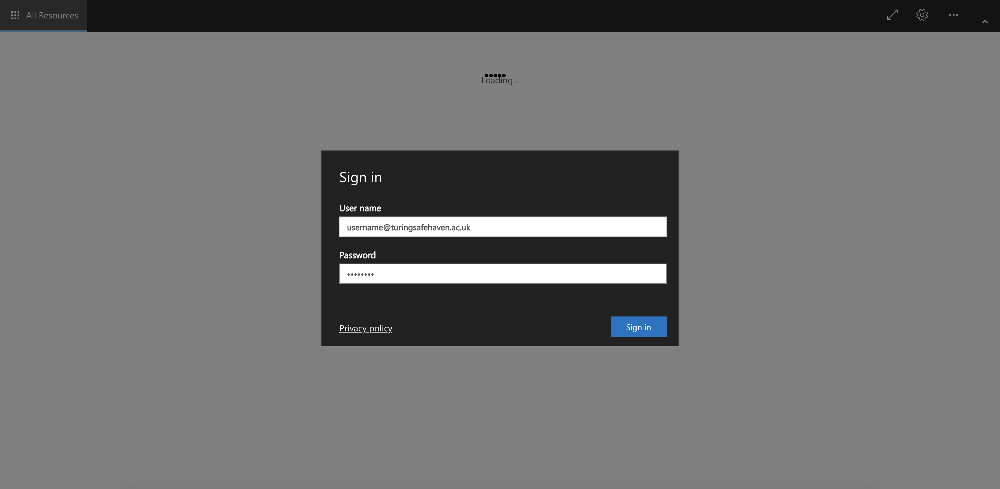
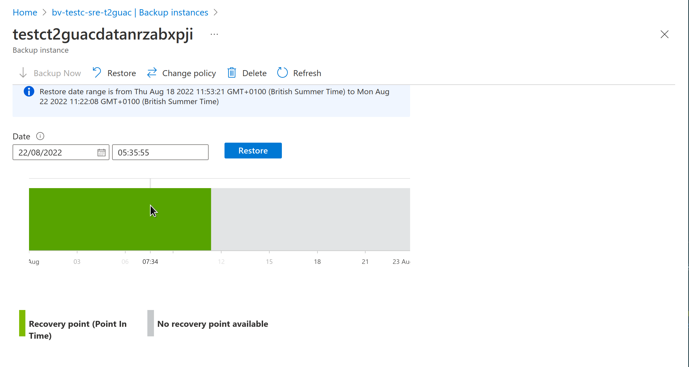
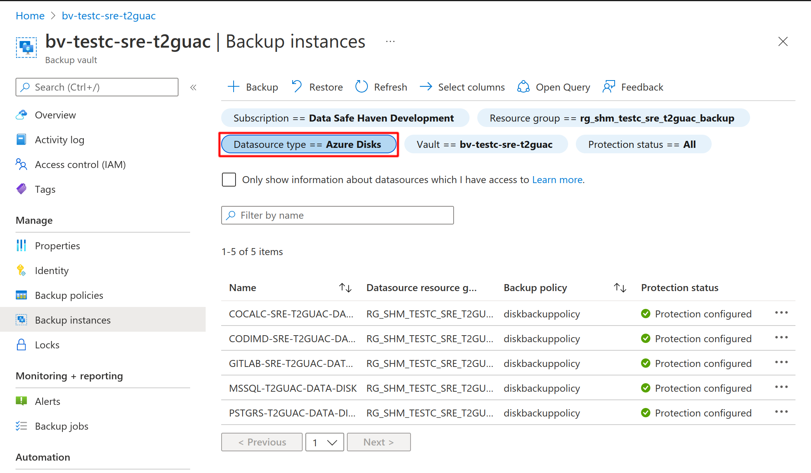
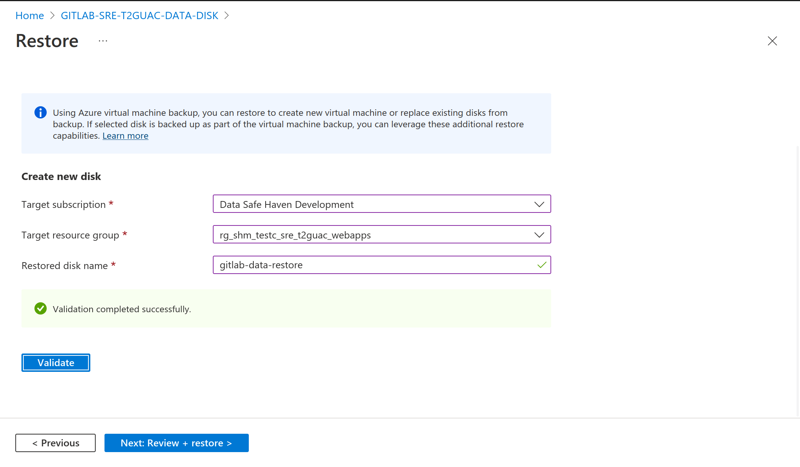
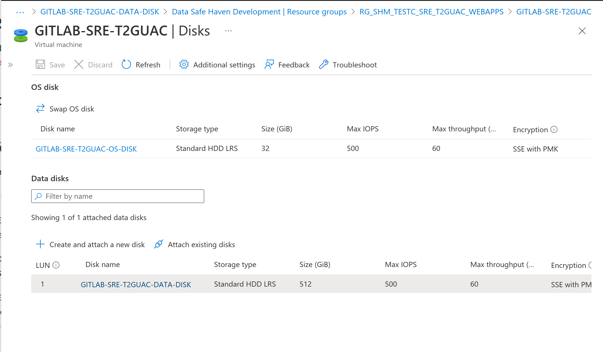

Administrator documentation¶
🌱 Prerequisites¶
This document assumes that you already have access a Safe Haven Management (SHM) environment and one or more Secure Research Environments (SREs) that are linked to it.
You will need VPN access to the SHM as described in the deployment instructions
🔰 Create new users¶
Users should be created on the main domain controller (DC1) in the SHM and synchronised to Azure Active Directory.
A helper script for doing this is already uploaded to the domain controller - you will need to prepare a CSV file in the appropriate format for it.
📜 Generate user details CSV file¶
🚗 Using data classification app¶
Follow the instructions in the classification app documentation to create users
Users can be created in bulk by selecting
Create User > Import user listand uploading a spreadsheet of user detailsUsers can also be created individually by selecting
Create User > Create Single User
After creating users, export the
UserCreate.csvfileTo export all users, select
Users > Export UserCreate.csvTo export only users for a particular project, select
Projects > (Project Name) > Export UserCreate.csv
Upload the user details CSV file to a sensible location on the SHM domain controller
Note
We suggest using
C:\Installation\YYYYDDMM-HHMM_user_details.csvbut this is up to you
✋ Manually edit CSV¶
On the SHM domain controller (DC1).
Make a new copy of the user details template file from
C:\Installation\user_details_template.csvTip
We suggest naming this
YYYYDDMM-HHMM_user_details.csvbut this is up to youRemove the example user and add the required details for each user
SamAccountName: Log in username without the@<SRE domain>part.Tip
We recommend using
firstname.lastnameformat.Warning
Ensure that
SamAccountNamehas a maximum of 20 characters from the 7-bit ASCII set (unnaccented letters, numbers and some punctuation) or synchronisation will fail.GivenName: User’s first / given nameWarning
Ensure that
GivenNameuses only characters from the 7-bit ASCII set (unnaccented letters, numbers and some punctuation) or synchronisation will fail.Surname: User’s last name / surnameWarning
Ensure that
Surnameuses only characters from the 7-bit ASCII set (unnaccented letters, numbers and some punctuation) or synchronisation will fail.Mobile: Phone number to use for initial password reset.Important
This must include country code in the format
+<country-code> <local number>(e.g.+44 7123456789).Include a space between the country code and local number parts but no other spaces.
Remove the leading
0from local number if present.This can be a landline or or mobile but must be accessible to the user when resetting their password and setting up MFA.
Users can add the authenticator app and/or additional phone numbers during MFA self-registration.
SecondaryEmail: An existing organisational email address for the user.Note
This is not uploaded to their Data Safe Haven user account but is needed when sending account activation messages.
GroupName: [Optional] The name of the Active Directory security group(s) that the users should be added (eg.SG SANDBOX Research Users).Tip
If the user needs to be added to multiple groups, separate them with a pipe-character (
|).
🔄 Create and synchronise users¶
Upload the user details CSV file to a sensible location on the SHM domain controller (recommended: C:\Installation).
This can be done by copying and pasting the file from your deployment device to the SHM DC.
Log into the SHM primary domain controller (
DC1-SHM-<SHM ID>) VM using the login credentials stored in Azure Key VaultOpen a
Powershellcommand window with elevated privilegesRun
C:\Installation\CreateUsers.ps1 <path_to_user_details_file>This script will add the users and trigger synchronisation with Azure Active Directory
It will still take around 5 minutes for the changes to propagate
Error
If you get the message New-ADUser : The specified account already exists you should first check to see whether that user actually does already exist!
Once you’re certain that you’re adding a new user, make sure that the following fields are unique across all users in the Active Directory.
SamAccountNameSpecified explicitly in the
CSVfile.If this is already in use, consider something like
firstname.middle.initials.lastname
DistinguishedNameFormed of
CN=<DisplayName>,<OUPath>byActive Directoryon user creation.If this is in use, consider changing
DisplayNamefrom<GivenName> <Surname>to<GivenName> <middle initials> <Surname>.
Danger
These domain administrator credentials have complete control over creating and deleting users as well as assigning them to groups
Do not use them except where specified and never write them down!
Be particularly careful never to use them to log in to any user-accessible VMs (such as the SRDs)
📲 Assign MFA licences¶
✋ Manually add licence to each user¶
Login into the Azure Portal and connect to the correct AAD
Open
Azure Active DirectorySelect
Manage > Licenses > All ProductsClick
Azure Active Directory Premium P1Click
AssignClick
Users and groupsSelect the users you have recently created and click
SelectClick
Assignto complete the process
🚗 Automatically assign licences to users¶
To automatically assign licences to all local Active Directory users that do not currently have a licence in Azure Active Directory.
Ensure you have the same version of the Data Safe Haven repository as was used by your deployment team
Open a
Powershellterminal and navigate to thedeployment/administrationdirectory within the Data Safe Haven repositoryRun the
./SHM_Add_AAD_Licences.ps1 -tenantId <Tenant ID>script, where<Tenant ID>is the ID of the Azure tenant belonging to the SHM you want to add the licences to
🃠User activation¶
We recommend using email to send connection details to new users.
Note
This is not a security risk since:
we are not sending passwords in this email
the user needs access to their previously-provided phone number in order to set their account password and MFA
A sample email might look like the following
Dear <participant name>,
Welcome to <event name>! You’ve been given access to a Data Safe Haven managed by <organisation name>. Please find a PDF version of our user guide attached. You should start by following the instructions about setting up your account and enabling multi-factor authentication (MFA).
Your username is: <username@domain> Your Safe Haven is hosted at: <URL>
The Safe Haven is only accessible from certain networks and may also involve physical location restrictions.
–details about network and location/VPN restrictions here–
👷 Common user problems¶
One of the most common user issues is that they are unable to log in to the environment. Here we go through the login procedure and discuss possible problems at each step
🌘 Expired webclient certificate¶
If the certificate for the SRE domain has expired, users will not be able to login.
Tip
Solution: Replace the SSL certificate with a new one
Ensure you have the same version of the Data Safe Haven repository as was used by your deployment team
Open a
Powershellterminal and navigate to thedeployment/secure_research_environment/setupdirectory within the Data Safe Haven repositoryEnsure you are logged into the
AzurewithinPowershellusing the command:Connect-AzAccountRun
./Update_SRE_RDS_Ssl_Certificate.ps1 -sreId <SRE ID>, where the SRE ID is the one specified in the config
🔴 Unable to log into remote desktop gateway¶
If users give the wrong username or password they will not be able to progress past the login screen.
Tip
Solution: Check user credentials, password may need to be reset.
🚋 Unable to open any remote apps¶
Users are stuck at the Opening remote port message and never receive the MFA prompt.

Tip
Solution: Check MFA setup
Ensure that the user has been assigned a license in Azure Active Directory
Check that the user has set up MFA (at https://aka.ms/mfasetup ) and is using the phone-call or app authentication method
⁉️ xrdp login failure on the SRD¶
If users can get to the login screen:

but then see this error message:

there are a couple of possible causes.
Error
Problem: the username or password was incorrectly entered
Solution: check username and password
Confirm that the username and password have been correctly typed
Confirm that there are no unsupported special characters in the password
Reset the account if there is no other solution
Error
Problem: the computer is unable to communicate with the login server
Solution: run diagnostics
This can happen for a variety of reasons (DNS problems, broken services on the SRD etc.)
Run the script under
deployment/administration/SRE_SRD_Remote_Diagnostics.ps1, providing the group and last IP octet of the problematic SRDThis will run a series of diagnostics intended to fix some common problems including
LDAP configuration
DNS configuration
SSS configuration
File mounting configuration
☁️ Unable to install from package mirrors¶
If it is not possible to install packages from the package mirrors then this may be for one of the following reasons:
Error
Problem: Mirror VNet is not correctly peered
Solution: Re-run the network configuration script.
On your deployment machine.
Ensure you have the same version of the Data Safe Haven repository as was used by your deployment team
Open a
Powershellterminal and navigate to thedeployment/secure_research_environment/setupdirectory within the Data Safe Haven repositoryEnsure you are logged into
AzurewithinPowershellusing the command:Connect-AzAccountNB. If your account is a guest in additional Azure tenants, you may need to add the
-Tenant <Tenant ID>flag, where<Tenant ID>is the ID of the Azure tenant you want to deploy into.
Run the
./Apply_Network_Configuration.ps1 -sreId <SRE ID>script, where the SRE ID is the one specified in the config
Error
Problem: Internal mirror does not have the required package
Solution: Check package availability
To diagnose this, log into the Internal mirror using the Serial Console through the Azure portal.
Check the packages directory (i.e. /datadrive/mirrordaemon/pypi/web/packages for PyPI or /datadrive/mirrordaemon/www/cran for CRAN)
If the requested package should be available (i.e. it is on the appropriate allowlist), then you can force a mirror update by rebooting the EXTERNAL mirrors.
This will trigger the following actions:
Synchronisation of the external mirror with the remote, internet repository (a
pullupdate)Synchronisation of the internal mirror with the external mirror (a
pushupdate)
This may take an hour or two but should solve the missing package problem.
💵 Cost management¶
When and SHM and/or SRE is not being used, it can be cost-efficient to shut it down in order to save on some of the ongoing running costs.
👇 Shut down an SHM or SRE¶
Sometimes you may want to temporarily shut down an SHM or SRE, rather than tearing it down entirely. You can do that with these scripts:
On your deployment machine.
Ensure you have the same version of the Data Safe Haven repository as was used by your deployment team
Open a
Powershellterminal and navigate to thedeployment/administrationdirectory within the Data Safe Haven repositoryThen do one or both of the following:
Shut down SHM
PS> ./SHM_Manage_VMs.ps1 -shmId <shm id> -Action EnsureStopped -Group All
Shut down SRE
./SRE_Manage_VMs.ps1 -shmId <shm id> -sreId <sre id> -Action EnsureStopped
👢 Start up an SHM or SRE¶
If you need to reboot an SHM or SRE that is not running, you can use the same scripts youused to shut them down, but changing the -Action flag to EnsureStopped, see below.
On your deployment machine.
Ensure you have the same version of the Data Safe Haven repository as was used by your deployment team
Open a
Powershellterminal and navigate to thedeployment/administrationdirectory within the Data Safe Haven repositoryRun
./SHM_Manage_VMs.ps1 -shmId <shm id> -Action EnsureStarted -Group Allto restart the SHMFor each SRE, run
./SRE_Manage_VMs.ps1 -shmId <shm id> -sreId <sre id> -Action EnsureStarted
Warning
If the Azure subscription that you have deployed into runs out of credit, the SHM and/or SRE will be shutdown automatically.
📦 Updating repository package allowlists¶
For a Tier 3 SRE only the packages named in the allowlists at environment_configs/package_lists/ can be installed by users.
To update the allowlists on an SHM, you should use the SHM_Package_Repository_Update_Allowlists.ps1 script.
PS> /deployment/administration/SHM_Package_Repository_Update_Allowlists.ps1 -shmId <SHM ID>
By default, this script will use the allowlists present in environment_configs/package_lists/ but you may use the -allowlistDirectory option to specify another directory containing the allowlists.
It is assumed that the allowlists will have the same names as those in in environment_configs/package_lists/.
💢 Tear down SHM package mirrors¶
During normal usage of the SHM, you should not need to tear down the package mirrors. However, if you no longer have any SREs at a particular tier and you want to save on the costs of running the mirrors, you might decide to do so.
On your deployment machine.
Ensure you have the same version of the Data Safe Haven repository as was used by your deployment team.
Open a
Powershellterminal and navigate to thedeployment/administrationdirectory within the Data Safe Haven repository.Ensure you are logged into
AzurewithinPowershellusing the command:Connect-AzAccount. This command will give you a URL and a short alphanumeric code. You will need to visit that URL in a web browser and enter the codeNB. If your account is a guest in additional Azure tenants, you may need to add the
-Tenant <Tenant ID>flag, where<Tenant ID>is the ID of the Azure tenant you want to deploy into.
Tear down the package mirrors by running
./SHM_Package_Repository_Teardown.ps1 -shmId <SHM ID> -tier <desired tier>, where<SHM ID>is the management environment ID specified in the configuration file.This will take a few minutes to run.
Ingress and Egress¶
Data Ingress¶
It is the data provider’s responsibility to upload the data required by the safe haven.
Important
Any data ingress must be signed off by the Dataset Provider Representative, Investigator and Referee (if applicable).
The following steps show how to generate a temporary write-only upload token that can be securely sent to the data provider, enabling them to upload the data:
In the Azure portal select
Subscriptionsthen navigate to the subscription containing the relevant SHMSearch for the resource group:
RG_SHM_<SHM ID>_PERSISTENT_DATA, then click through to the storage account called:<SHM ID><SRE ID>data<storage suffix>(where<storage suffix>is a random string)Click
NetworkingunderSettingsand paste the data providers IP address as one of those allowed under theFirewallheader, then hit the save icon in the top leftFrom the
Overviewtab, click the link toContainers(in the middle of the page)Click
ingressClick
Shared access signatureunderSettingsand do the following:Under
Permissions, check these boxes:WriteList
Set a 24 hour time window in the
Start and expiry date/time(or an appropriate length of time)Leave everything else as default click
Generate SAS token and URLCopy the
Blob SAS URL
Send the
Blob SAS URLto the data provider via secure email (for example, you could use the Egress secure email service)The data provider should now be able to upload data by following these instructions
You can validate successful data ingress by logging into the SRD for the SRE and checking the
/datavolume, where you should be able to view the data that the data provider has uploaded
Software Ingress¶
Software ingress is performed in a similar manner to data.
Important
Software ingress must go through the same approval policy as is the case for data ingress, including sign-off from the Dataset Provider Representative, Investigator and Referee (if applicable).
Follow the same steps as for data ingress above to provide temporary write access, but set the time window for the SAS token to a shorter period (e.g. several hours)
Share the token with the Investigator, so they can install software within the time window
The Investigator can perform software ingress via
Azure Storage Explorer(for instance as a zip file), by following the same instructions as the data provider
Data egress¶
In the Azure portal select
Subscriptionsthen navigate to the subscription containing the relevant SHMSearch for the resource group:
RG_SHM_<SHM ID>_PERSISTENT_DATA, then click through to the storage account called:<SHM ID><SRE ID>data<storage suffix>(where<storage suffix>is a random string)Click
NetworkingunderSettingsto check the list of pre-approved IP addresses allowed under theFirewallheader and check your own IP address to ensure you are connecting from one of theseClick
ContainersunderData storageClick
egressClick
Shared access signatureunderSettingsand do the following:Under
Permissions, check these boxes:ReadList
Set a time window in the
Start and expiry date/timethat gives you enough time to extract the dataLeave everything else as default click
Generate SAS token and URL
Leave this portal window open and move to the next step
Open
Azure Storage Explorer(download it if you don’t have it)Click the socket image on the left hand side

On
Select Resource, chooseBlob containerOn
Select Connection Method, chooseShared access signature URL (SAS)and hitNextOn
Enter Connection Info:Set the
Display nameto “egress†(or choose an informative name)Copy the
Blob SAS URLfrom your Azure portal session into theBlob container SAS URLbox and hitNext
On the
Summarypage, hitConnectOn the left hand side, the connection should show up under
Local & Attached > Storage Accounts > (Attached Containers) > Blob Containers > ingress (SAS)You should now be able to securely download the data from the Safe Haven’s output volume by highlighting the relevant file(s) and hitting the
Downloadbutton
The output volume¶
Once you have set up the egress connection in Azure Storage Explorer, you should be able to view data from the output volume, a read-write area intended for the extraction of results, such as figures for publication.
On the SRD, this volume is /output and is shared between all SRDs in an SRE.
For more info on shared SRE storage volumes, consult the Safe Haven User Guide.
🗄️ Backup¶
🗃️ Restoring blobs¶
Blob containers in backed up storage accounts are protected by operational backup. It is possible to restore the state of the blobs to an earlier point in time, up to twelve weeks in the past.
The blob containers covered by the protection for each SRE are the
ingress container (mounted at
/data)egress container (mounted at
/output)backup container (mounted at
/backup)
To restore these containers to a previous point in time:
Important
Blobs are restored ‘in place’. The current state will be overwritten by the point which you restore to.
In the Azure portal select
Subscriptionsthen navigate to the subscription containing the relevant SRESearch for the resource group:
RG_SHM_<SHM ID>_SRE_<SRE ID>_BACKUP, then click on the storage account called:bv-<shm id>-sre-<sre id>Click
Backup instancesunderManagein the left-hand menuEnsure that the
Datasource typefilter is set toAzure Blobs (Azure Storage)
Click on the storage-account backup instance
Select a point in the past to restore to and click
RestoreClick on
Next: Restore ParametersYou can now choose whether to restore all, or a subset of the containers. In the example below the ‘egress’ and ‘backup’ containers are selected
Click on
Validate
Click on
Next: Review + restoreClick on
Restore
💿 Restoring disks¶
Backed up disks have incremental snapshots taken daily.
These snapshots are stored in the backup resource group,RG_SHM_<SHM ID>_SRE_<SRE ID>_BACKUP.
The disks covered by the protection for each SRE are the
GitLab data disk
CodiMD data disk
CoCalc data disk
PostgreSQL data disk
MSSQL data disk
To restore a disk:
Important
Restoring a disk creates a new disk object from the incremental snapshots. You will need to specify where to create the disk and its name. You will also need to attach the disk to any virtual machines which should use it and enroll the new disk into the backup system.
In the Azure portal select
Subscriptionsthen navigate to the subscription containing the relevant SRESearch for the resource group:
RG_SHM_<SHM ID>_SRE_<SRE ID>_BACKUP, then click on the storage account called: `bv--sre- Click
Backup instancesunderManagein the left-hand menuEnsure that the
Datasource typefilter is set toAzure DisksClick on the disk to restore
Click
RestoreClick
Select restore pointto choose which snapshot to revert to and clickSelect. By default only snapshots from the last 30 days are displayed but this can be adjustedClick
Next: Restore ParametersEnter the subscription and resource group in which to create the new disk; these should match the original disk
Enter a name for the new disk and click
ValidateClick on
Next: Review + restoreClick on
RestoreWait for the restoration to finish. You can monitor the progress on the backup instance page on the Azure portal


Navigate to the resource group where the new disk has been created
Select the virtual machine the old disk is attached to and click
Disksin the left-hand menuTake note of the old disks ‘LUN’
Remove the old disk be clicking the ‘X’ at the righ-hand side of the disk table
Click
SaveClick
Attach existing disksand selected the disk you restoredEnsure the restored disk has the same ‘LUN’ as the old disk
Click
Save
Restart the virtual machine
💿 Enrolling restored disks for backup¶
On your deployment machine.
Ensure you have the same version of the Data Safe Haven repository as was used by your deployment team
Open a
Powershellterminal and navigate to thedeployment/administrationdirectory within the Data Safe Haven repositoryEnsure you are logged into
AzurewithinPowershellusing the command:Connect-AzAccount. This command will give you a URL and a short alphanumeric code. You will need to visit that URL in a web browser and enter the codeNB. If your account is a guest in additional Azure tenants, you may need to add the
-Tenant <Tenant ID>flag, where<Tenant ID>is the ID of the Azure tenant you want to deploy intoNote the name of the restored disk and the name of the resource group it belongs to
Run the following script subsituting
and with the names of the resource group and disk respectively: ./SRE_Enroll_Disk_Backup.ps1 -shmId <SHM ID> -sreId <SRE ID> -resourceGroup <resource group name> -diskName <disk name>
🔚 Remove a deployed Safe Haven¶
🔥 Tear down an SRE¶
In order to tear down an SRE, use the following procedure:
On your deployment machine.
Ensure you have the same version of the Data Safe Haven repository as was used by your deployment team
Open a
Powershellterminal and navigate to thedeployment/administrationdirectory within the Data Safe Haven repositoryEnsure you are logged into
AzurewithinPowershellusing the command:Connect-AzAccount. This command will give you a URL and a short alphanumeric code. You will need to visit that URL in a web browser and enter the codeNB. If your account is a guest in additional Azure tenants, you may need to add the
-Tenant <Tenant ID>flag, where<Tenant ID>is the ID of the Azure tenant you want to deploy into.Run the following script:
./SRE_Teardown.ps1 -shmId <SHM ID> -sreId <SRE ID>
If you provide the optional
-dryRunparameter then the names of all affected resources will be printed, but nothing will be deleted
💣 Tear down the SHM¶
In order to tear down the SHM, use the following procedure (you may skip the tearing down of package mirrors, unless this is the specific thing you wanted to do):
🔓 Disconnect from the Azure Active Directory¶
Connect to the SHM Domain Controller (DC1) via Remote Desktop Client over the SHM VPN connection
Log in as a domain user (ie.
<admin username>@<SHM domain>) using the username and password obtained from the Azure portalIf you see a warning dialog that the certificate cannot be verified as root, accept this and continue
Open Powershell as an administrator
Navigate to
C:\InstallationRun
.\Disconnect_AD.ps1You will need to provide login credentials (including MFA if set up) for
<admin username>@<SHM domain>
Attention
Full disconnection of the Azure Active Directory can take up to 72 hours but is typically less.
If you are planning to install a new SHM connected to the same Azure Active Directory you may find the AzureADConnect installation step requires you to wait for the previous disconnection to complete.
💥 Tear down any attached SREs then the SHM¶
On your deployment machine.
Ensure you have the same version of the Data Safe Haven repository as was used by your deployment team
Open a
Powershellterminal and navigate to thedeployment/administrationdirectory within the Data Safe Haven repositoryEnsure you are logged into
AzurewithinPowershellusing the command:Connect-AzAccount. This command will give you a URL and a short alphanumeric code. You will need to visit that URL in a web browser and enter the codeAttention
If your account is a guest in additional Azure tenants, you may need to add the
-Tenant <Tenant ID>flag, where<Tenant ID>is the ID of the Azure tenant you want to deploy into.For each SRE attached to the SHM, do the following:
Tear down the SRE by running:
./SRE_Teardown.ps1 -sreId <SRE ID>
where the SRE ID is the one specified in the relevant config file
Note
If you provide the optional
-dryRunparameter then the names of all affected resources will be printed, but nothing will be deleted
Tear down the SHM by running:
./SHM_Teardown.ps1 -shmId <SHM ID>
where
<SHM ID>is the management environment ID specified in the configuration file.